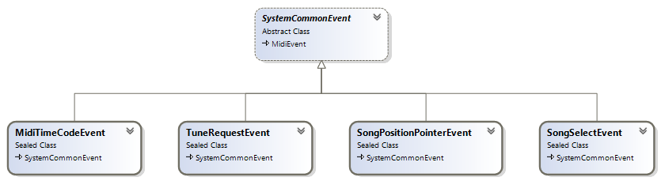

System common events are those that prompt all devices on the MIDI system to respond (are not specific to a MIDI channel), but do not require an immediate response from the receiving MIDI devices (unlike system real-time events):
The class diagram below shows system common event types in the DryWetMIDI:

Let's see on all system common event classes presented in the DryWetMIDI.
MIDI Time Code
A MIDI event that carries the MIDI quarter frame message is timing information in the hours:minutes:seconds:frames format (similar to SMPTE) that is used to synchronize MIDI devices.
public sealed class MidiTimeCodeEvent : SystemCommonEvent
{
// ...
public MidiTimeCodeEvent() { /*...*/ }
public MidiTimeCodeEvent(MidiTimeCodeComponent component, FourBitNumber componentValue) { /*...*/ }
// ...
public MidiTimeCodeComponent Component { get; set; }
public FourBitNumber ComponentValue { get; set; }
// ...
}
Song Position Pointer
A MIDI event that carries the MIDI song position pointer message tells a MIDI device to cue to a point in the MIDI sequence to be ready to play.
public sealed class SongPositionPointerEvent : SystemCommonEvent
{
// ...
public SongPositionPointerEvent() { /*...*/ }
public SongPositionPointerEvent(ushort pointerValue) { /*...*/ }
// ...
public ushort PointerValue { get; set; }
// ...
}
Song Select
A MIDI event that carries the MIDI song request message (also known as a "song select message") tells a MIDI device to select a sequence for playback.
public sealed class SongSelectEvent : SystemCommonEvent
{
// ...
public SongSelectEvent() { /*...*/ }
public SongSelectEvent(SevenBitNumber number) { /*...*/ }
// ...
public SevenBitNumber Number { get; set; }
// ...
}
Tune Request
A MIDI event that carries the MIDI tune request message tells a MIDI device to tune itself.
public sealed class TuneRequestEvent : SystemCommonEvent
{
// ...
}
Descriptions of MIDI events are taken from RecordingBlogs.com.